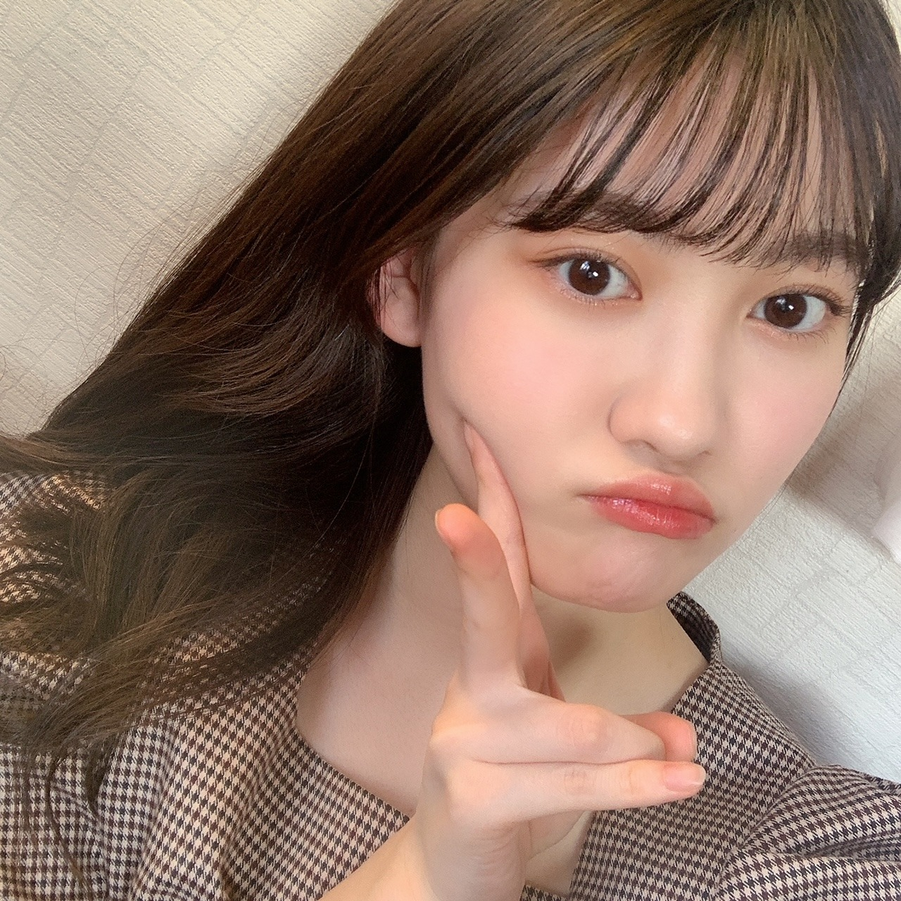

2020/1221Mon1つ 松尾美佑
私が今立っている場所から見える空は
雲がひとつも無いです
すっごく綺麗な水色です
今日も太陽と共にご機嫌な松尾美佑です

アンダーライブ2020、お疲れ様でした！
3日間、有観客と配信という形で本当にお疲れ様でした！
実は私も見に行かせて頂きました¨̮
感染症対策の為に会場では声を出さないで見るという新鮮な形で、
その代わり叫びたい気持ちをスティックバルーンに込めて沢山ポンポンとしていました！
本っ当にかっこよくて、輝いていて、
この気持ちをどの言葉で伝えたら良いのか、
そもそもこの気持ちを全て伝えられるような言葉がこの世にあるのかがちょっとよく分からないのですが、
本当に眩しくて、瞬きが出来なかったです。
かっこいい曲と明るい曲の表情や表現の差も、
本当に同じ方々なのかと不思議に思ってしまうくらいガラッと空気ごと変わって心臓が追いつかなかったです。
何よりも先輩方の仲の良さに元気を貰って、
そして会場全体の一体感を全身で感じて心がギュ〜っとして暖かい空間に包まれました。
アンコールの時に、皆さん声を出せないので
のーぎざか フォーティーシックス
のリズムでスティックバルーンを叩いていて、その音が揃っていて、
本当にその温かさに感動して、なんて素敵なんだろうと気持ちが溢れました。
そのアンコールの時に
客席でサイリウムでハートをかいている方がいらっしゃって、
反対側の客席でそれを見て同じくサイリウムでハートをかいて応えてる方がいらっしゃって、
それを見てハートをかく方が次々増えていて、
本当に皆さんの温かさに心の底から幸せを貰いました。
素敵過ぎる空間にいれたこと、
そんな温かさを作った先輩方、
全てが大切で宝物に思いました。
先輩方、皆さん、幸せな忘れられない時間をありがとうございました！！
私はスティックバルーンを沢山叩いたら片方萎んでしまいました。
今イヤホンで
『ここにいる理由』が流れてますˊᵕˋ

題名:きらきらしたかった日。
あ、最近
幸阪に会いました〜
幸阪茉里乃〜
5億年ぶりくらいな感覚です。
お誕生日おめでとうも伝えられました！！
あとぱるにも会えました〜
あ！！あと
守屋麗奈にも会えました〜！
べびちゃんがお姉さんオーラ出しててびっくりしちゃいました。
みんな可愛すぎて震えました。
明日は〜
なお〜〜〜〜〜〜〜〜〜〜
"と" にちっちゃい "ゆ" は日本語か？と聞かれました。
とゅーーーー
も日本語だよ多分
( ㆀ)( ㆀ)( ㆀ)
次の私のブログの日にはもうクリスマスは終わってるらしい。
あ、皆さんちゃんとサンタさん追跡してますか？
家を通過したら教えてください
❆ ☺︎ ٩
↑季節のご挨拶 (妖精語)
ミュウでした¨̮


ばいっっっっっっ( Ꙭ )/''
コメント(163)
好きです！
アンダラ良かったよね！！！
今年ももう終わっちゃうねー今年やり残したことあるー？
またブログ待ってるねー！
そろそろクリスマス！
アドベントカレンダーももう少しで終わりになっちゃうね
次のブログではもうクリスマス終わってるだなんて
時が過ぎるのはすごく早いね
クリスマスの日みゆりんの元に素敵なプレゼントが届きますように
ちなみに私はクリスマスプレゼントにヘアアイロン頼んだ！笑
みゆりんはサンタさんに何頼んだのかなぁ笑
✂︎- - - - - - - -キリトリ- - - - - - - - - - -✂︎
２枚目の写真の髪型とメイクがめちゃくちゃ好み！
でも結局4枚とも可愛すぎてキュンキュンしちゃう笑
ハート型書いてた人私も見たかったなぁ笑
✂︎- - - - - - - -キリトリ- - - - - - - - - - -✂︎
前回はあんまりコメント書けなかったから
今回はちょっと長めになっちゃつた気がする笑
やっぱり最後は質問！
【質問】
✽みゆりんはサンタさんに何頼んだ？？
✽みゆサンタから私たちになにかプレゼントちょーだい笑
今日も素敵なブログをありがとう☺︎
また5日後楽しみにしてるね！
アンダーライブ行きたかったけど行けなかった、、、
アンダーの曲カッコイイからめっちゃ聞きたかったー！
美佑サンタが通過したら報告します。
前髪なしのみゆちゃんめっちゃ大人っぽい♡
めっちゃ好きやわ！！！！！みにいより！
ー質問ー
・ひとり○○で何かしてみたいことってある？
・第二言語にフランス語とドイツ語やるならどっちにする？
・最近聴く曲に悩むんだけど、オススメの曲ってある？
ありがとう！次回も楽しみにしているよ。
アンダーライブ私はバイトで見れなかったんだけどみんなのレポ聞いてるだけで盛り上がってるのが伝わってきてほんとに見たかった〜って思ったよ〜！サイリウムでハートを送りあうのすごく平和な感じがしていいね！ライブに行けるようになった時は私はみゆちゃんにハートを送りますね笑笑
またブログまってるねーー！
今日の空きれいだったよね！
私も思ったよ~
美佑ちゃんもアンダラ行ってたんだね！いつも通り声とか出せなかったけどすごく良いライブだったね
それと、今回のブログの写真のリップすごくいい色だね！
私も同じの欲しくなっちゃった
もしよかったら教えてください
またコメントするね〜
ご機嫌な松尾美佑ちゃんですね！
いつもキラキラしてますよ！
アンダーライブ素晴らしかったですね。現地に行きたかったです！
サンタさん楽しみにクリスマス過ごそうと思います笑
またブログ待ってますね！
今日の写真、めっちゃきれいだよーー
大人っぽくてとっても好き！ おでこ～
アンダラのこと書いてくれてありがとう！
現地で見れたんだね！！
自分は3日間とも配信だったけど、本当に最高のライブでしたね、
表現とか表情の豊かさ、会場のあたたかさ、
たしかに素晴らしかったよね、配信でもすっごく伝わってきたよ
最終日の全曲披露は圧巻だったね！ メンバーの団結力も感じました！
先輩たちの輝く姿、いろんなものを感じて刺激になりましたか？
美佑ちゃん、4期のみんなのライブもいつか生で応援したい！ 待っているね
いつもありがとー
またね！
アンダーライブ見に行ったんだ！良かったよね〜
あ、昨晩の乃木中で美佑ちゃんの話し面白かったよ〜松夫の領収書、、
サンタさん追跡頑張ります
アンダーライブ見に行ったんですね
美佑ちゃんのブログ読んでとっても良いライブだったんだって伝わってきました
来年はまた有観客でライブできたらいいね
質問です
クリスマスプレゼントは何か貰えましたか？
ではまた5日後楽しみに待ってます
ミュウちゃんクリスマスプレゼント僕に何かください(笑)ミュウちゃんは今年クリスマスプレゼント何貰えるのか楽しみにクリスマスを過ごします。てか、クリスマスバイトでしたわ|(￣3￣)|クリぼっち生活悲しい……次のクリスマス明けのブログも楽しみにしてます。最近寒い時期やからミュウちゃんも風邪引かないように気を付けてくださいね。僕も気をつけます。ではでは5日後も楽しみにしてます。
質問させてもらいます。
・クリスマス何食べたの？？
・4期生ライブで一番緊張した場面ありました？？
・ミーグリで何話そうか迷ってるんですけど何かお話ししたいこととかありますか？
・寒い時期に食べたい食べ物ある？？
・ミーグリ楽しみなんですけど、とても緊張するから何からリラックスする方法とかあります？？
クリスマスの次の日で..
まあ 三が日も 似たような もんかな？ 笑
だいちゃりは今仕事終わったばかりですよ〜
いやぁ念願の妖精語見れて嬉しいですね〜そんな感じなんですね(笑)
サンタさんかぁ、20歳すぎてるから来るかどうか怪しいけどだいちゃりは信じてます！多分1日遅れの26日くらいにとても可愛いサンタさんが笑顔と共に最高の画像をプレゼントしてくれるに違いない！(笑)ね？きっと来てくれますよね？(笑)
まぁ冗談はさておき、美佑ちゃんのブログ見れたので今日の楽しみはノギザカスキッツですね！はやく1時半にならないかな〜？すっごい楽しみ！美佑ちゃんはリアタイするのかな？まぁでも明日も学校とかあるだろうから身体に響かないようにね？
ではでは、今回はこの辺で…またノギスキ見終わったらコメントするね〜！それじゃ、ばいっ！！！
めちゃめちゃ可愛い
更新ありがとうございます❕
最近の推しメンです❕❕
これからも頑張って❗
アンダラ3日間楽しかったね！！
3日とも配信やったけどほんまに良かった。
でもやっぱり現地の雰囲気って格別。
またライブに行きたい欲が強なった笑
4期ラも現地で見たかった、、
いけるようになるの楽しみにしてる。
ミュウちゃんも色々思うことあったかな。
先輩の見ると学ぶことがいっぱいあるよね。
俺も先輩から学ぶこと多いもん。
今は高3やから自分が先輩やけど、、笑
学んだことを活かせたらいいね！
これからも応援してます！
ではでは体調には気をつけて。
次のブログも待ってます。
いつもありがとう。
ブログ更新ありがとう！
今回のブログも楽しみにしてました！
アンダーライブ､観に行ったんだね！
自分も見たかったんだけど､今回は仕事やら用事やらで配信も見れずでした…｡
でも､メンバーのブログとかを見ると本当にいいライブだったのが伝わったし､何より今回は有観客ということで色々な制限はあるけど､こういうご時世の中でいいきっかけにもなったライブかなとも思います｡
まだこの先どうなるか分からないけど､次は全体のライブが有観客で出来るといいね！
最後に質問！
ミュウちゃんにとって今までで1番印象に残ってるクリスマスプレゼントは何ですか？
今回も素敵なブログをありがとう！
次回のブログも楽しみにしてるね！
それじゃまた！
ご機嫌なミュウは良い(*´ω｀*)チェック柄可愛い(*´ω｀*)
えー？ミュウは配信ではなく、実際に会場に行って見たか？(ﾟдﾟ)！良いなあ(｡>﹏<｡)
スティックバルーン片方がしぼんだって、熱意か？腕力か？（笑）
うわーー、キラキラした日、デコ出しミュウキレイ(〃ω〃)
「とゅーーーー」ってどういう意味かな？（笑）
❆ ☺︎ ٩妖精語って（笑）
今度ブログ全部妖精語で書いてみて（笑）
ピースからのほっぺたむにゅ(｡>﹏<｡)可愛い
これからも頑張って(/･ω･)/
PS:今更だけど、ノギザカスキッツのマチソワカンを見たよ！ずっと失敗してるミュウは凄く可愛かったなあ(〃ω〃)♡（笑）
かわいい(*'▽'*)
ミーグリ取ったから会えるの楽しみ(^^)
アンダラ行ってたよ。
みゆちゃん見つけれんかった(ToT)
ライブは現場が楽しい！！
改めて感じたし、
アンダラが楽しいのも再認識できた(^^)
4期ライブも現場で見たかったな〜
早くライブが一緒に楽しめる日がくることと、
みゆちゃんに会えることを、
楽しみにしてる！！
来年こそ！！
ほなまた〜
しんちゃん
かわいいよ(*´ω｀*)
僕も最終日見に行きました！
ライブって本当に楽しいなと改めて思ったよ
本当に幸せな空間でした！
今年も色々大変だったけどお疲れ様。
また寒くなってきて感染者も増えてきたけど、気をつけて生活していこ！
ずっと応援です！
最後に質問
・今までのクリスマスの一番の思い出は？
よろしくね！
ご機嫌なようで私も嬉しい笑！
アンダラ 見に行ってたんだね♡私は配信で楽しませてもらって、すごくすごく素敵なライブだったなぁって余韻に浸ってたところでした(*´◒`*) 暖かい空間だと美佑ちゃんが感じてくれてること、そんな空間を早くまた体験してほしいなぁと願うばかりです(..) いつかまた有観客になった時に美佑ちゃんに会えますように☺︎
サンタさんこれから追跡しますっっ笑笑 美佑ちゃんもサンタさん通過したら教えてください✌︎
妖精語でのご挨拶可愛い笑！❆ ☺︎ ٩ 私も同じ妖精語で返すね٩(๑❛ᴗ❛๑)۶
☆美佑ちゃんに会えるのが楽しみです☺︎どんなお話しようか考えてるんだけどメイクのお話とかしていいですか♡？
☆寒くなってきたけどハマってる食べ物ありますか☺︎？
☆どんな空が好きですか？？
☆美佑ちゃんサンタからプレゼントくださいっ
寒いから体調には気をつけてね〜！また5日後に笑顔で会おうね☺︎
またねっ( Ꙭ )/''
エピソード的に自分もいってた2日目かな？
アンダラのあの空気感自分も好きです
スティック叩きすぎて最終的にシワシワになった
デコだし可愛すぎます姫
研究生同士の絆が尊い！
出ました妖精語
ブログ更新ありがとう！
待ってたよ！
アンダーライブ見られなかったんだ…。だけど、とても評判いいし、すごく見たかったなぁって思ってる…。松尾ちゃんも素晴らしい先輩のキラキラした姿見て、とても勉強になったんじゃないかな？いつか、松尾ちゃんが大きくなって、ステージで華麗に披露するときの糧になってくれたら嬉しいなぁ！期待してます！！
美佑サンタ、家にくるの楽しみにしてるね！
お体には気をつけて！
前髪なしのみゆちゃん大人っぽくてめっちゃ好き！！
もうすぐ今年も終わるけど今年やり残したことってありますか？？
また5日後楽しみにしてるね！！
いつか4期生のみんながアンダーライブのステージに立つことがあると思います。その時が来たら先輩たちが見せてくれたような熱い姿が見られたら良いなと思っています！
アンダーライブ2020観に行ってたんだね！自分も19日に会場に行って観てました〜。こういった状況下でもライブが無事開催されて、歓声や人の熱気がいつもに比べてなかったけど、スティックバルーンの響きや久々の実会場でのライブって事も相まって、また違った新しいライブの見え方ができてよかったなーって思いましたね。案外スティックバルーンも悪くないし、今後もやってほしいなって思った笑
コロナ感染追跡アプリがあるならサンタ追跡アプリもあったらいいですね笑。次の更新待ってまーす！おつかれさん！
ジャンケンポイ
あっち向いて
今から。
ホントの気持ち伝える。
好きだよ。
こんばんは。
パンプキンポンプキン(恋)
です。
愛してるゲームに似ていますが
まず
ジャンケンをします。
勝った方が
「あっち向いて。今から。本当の気持ち伝える。好き。」
と、言います(迫真の演技で)
照れたら負けです。
笑っても。
耐えたらまたジャンケン
して勝った方がセリフ
を言います。
そんなゲームを発明したの
ですが是非乃木坂の皆さん
で行ってみてください。
流行ると思います。
おでこ出しの髪型が大好き
なんです。
今日も見れて嬉しいです。
かきあげ風バング
大好きなんですよね。
前髪を上げてラフに片方に
髪を持ってきて七三くらい
の割合にする髪型は
大人の女性といった印象を
強く受けます。
ドキっとします。
美佑さんおでこ出し似合う
のでガバッとかきあげて
じっと見つめられたら
heart melter.
四期生ライブの時に
お団子ヘアのリクエスト
が清宮レイさんから
あったんですよね？
見てみたかったです。
良かったらブログに
アップしてください:)
サンタさん追っかけるので。
パンプキンポンプキンは
心の綺麗な人にしか見え
ないんですよね。
クリスマスの日には私も
子供達にプレゼントを
配ってまわるんです。
ミュウちゃんには私の
姿が見えるかな？
アイドル的には前髪が
あってストレートな
のかな。
でもそれもいつもかわいいよ<3
今日もご機嫌だね、最高！
チャァオ〜〜〜!☆彡
ミュウちゃん、いつも大人ぽいけど〜〜〜⤴️⤴️⤴️
本当に、16歳〜〜〜❔❤️❤️❤️❤️❤️笑顔
実は〜〜・・
写メはお姉さん、ではないよねぇ〜〜⤴️⤴️⤴️❕❔❤️❤️❤️❤️❤️笑
(＠＾▽゜＠）ゞ❤️❤️❤️
❇️❇️おすまし！⚜️❇️⭐彡
アンダラ見に行ったんだ！いいなー。私は見れなかった…
確かに次の更新はクリスマス過ぎてるね…何かほしいものありますか？
体調には気をつけてね。
自分が思っている以上に、人に正確に伝えるって難しいですよね。
キラキラみゆちゃん、可愛すぎます！
前髪もねじりアレンジでお姉さんな感じで素敵です✩.*˚
前回のブログから気になっているのですか、、
＊サンタさんって追跡できるんですか！？Σ(ﾟﾛﾟ;)
家に来るサンタさんは今どこを旅しているのか気になります、、無事お家にたどり着いてくれることを願います）Oo｡.（´-`）
今回、短めのコメントですみません、、。
お体には気をつけて頑張ってください！
応援していますᕙ( ˙-˙ )ᕗ
アンダラ観に行ってたんですね！
僕は配信も見れなかった
でも、久しぶりの有観客のライブが大成功で終わったようでよかったです。
あと今年もCDTV、Mステスーパーライブ、レコ大、紅白を残すのみですね。最後まで、怪我のないように終えられるように、そして大成功で終わるように祈っています。
ファイティン
コメントする

PROFILE
新4期生リレー
202104
| SUN | MON | TUE | WED | THU | FRI | SAT |
|---|---|---|---|---|---|---|
| 1 | 2 | 3 | ||||
| 4 | 5 | 6 | 7 | 8 | 9 | 10 |
| 11 | 12 | 13 | 14 | 15 | 16 | 17 |
| 18 | 19 | 20 | 21 | 22 | 23 | 24 |
| 25 | 26 | 27 | 28 | 29 | 30 | |

可愛い！